Galeri Kegiatan
.jpg) 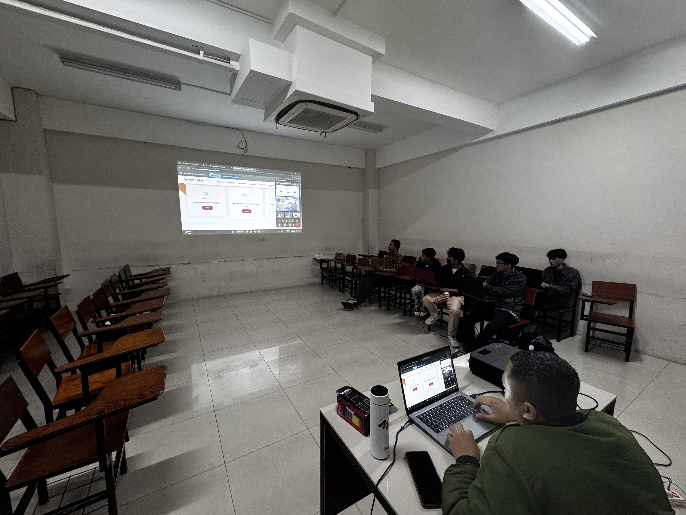
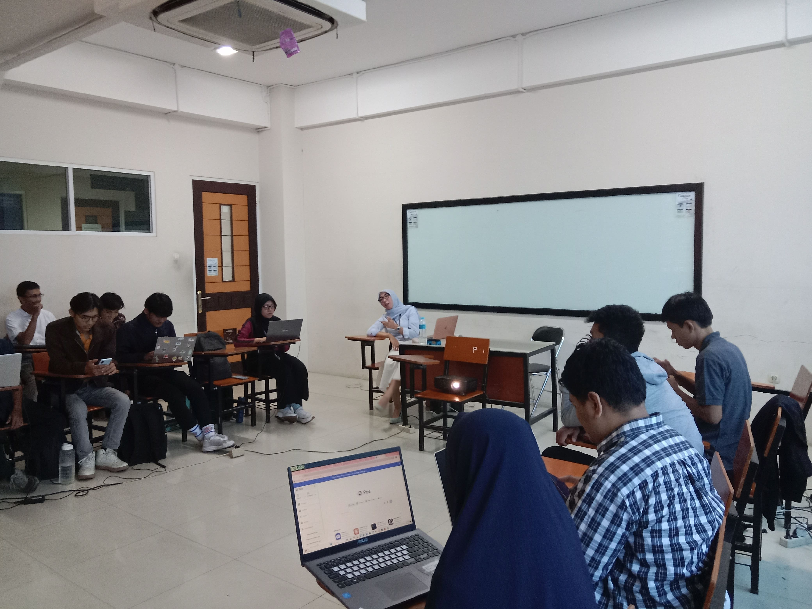
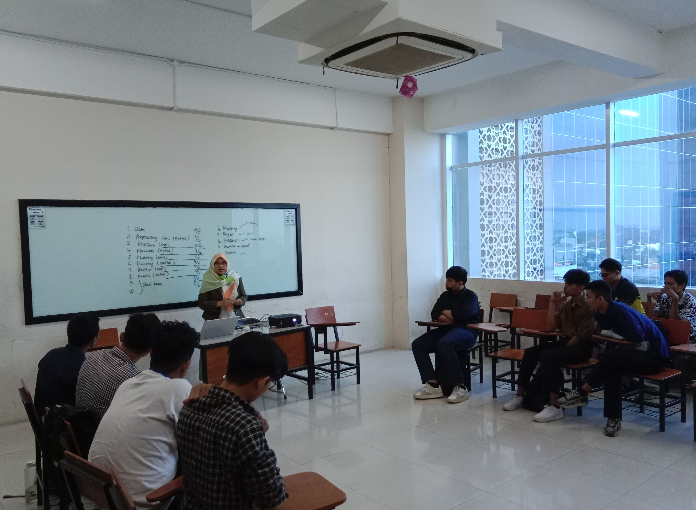
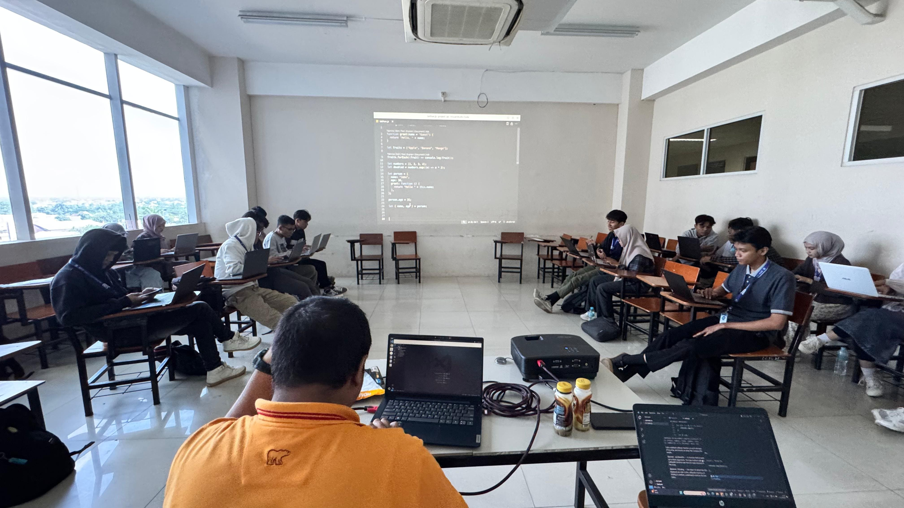
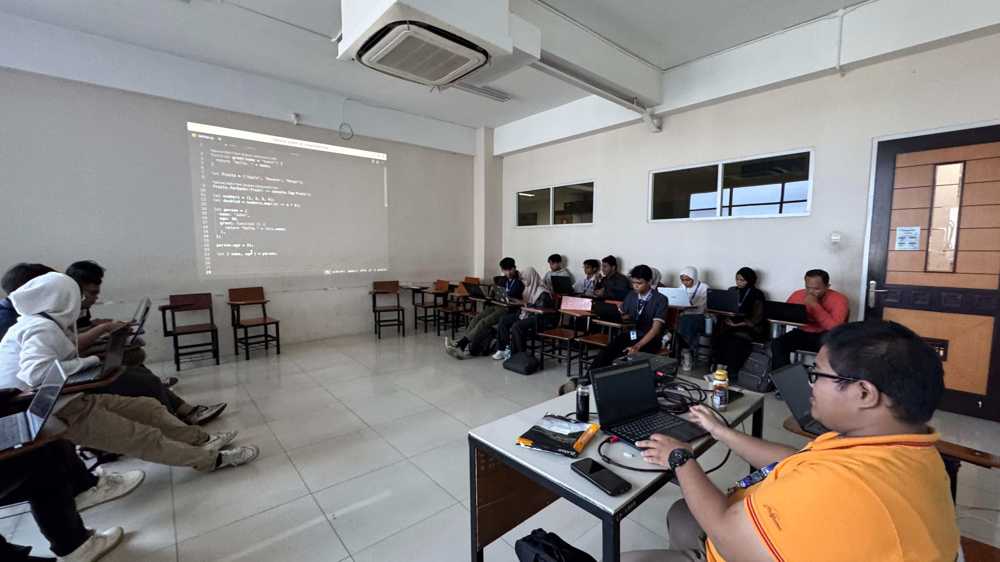
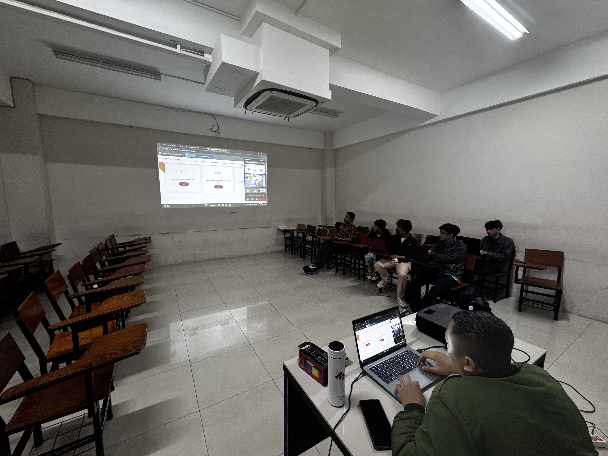
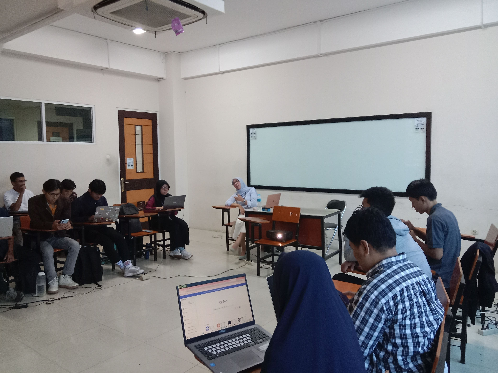
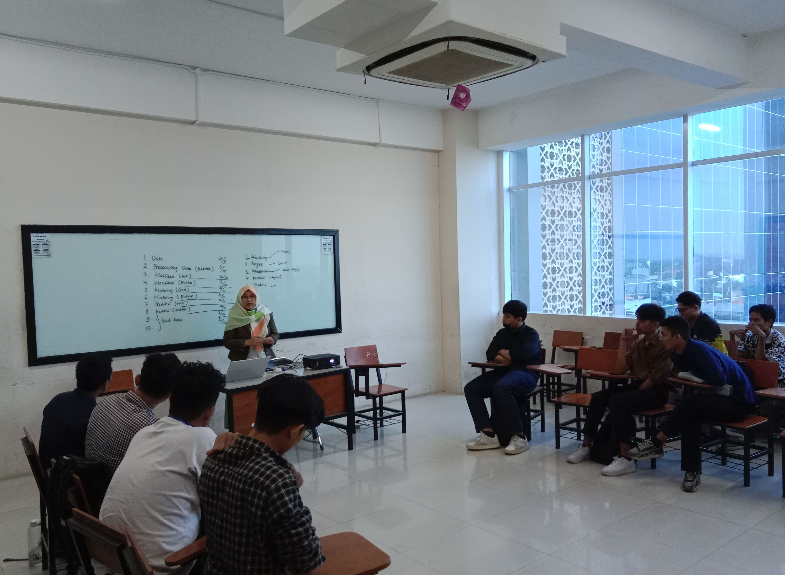
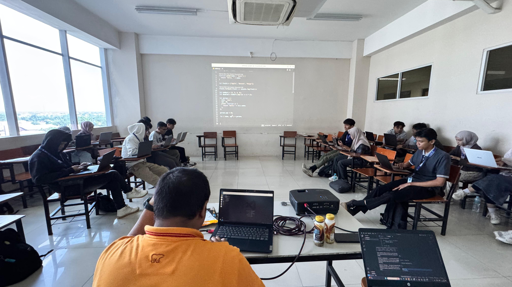
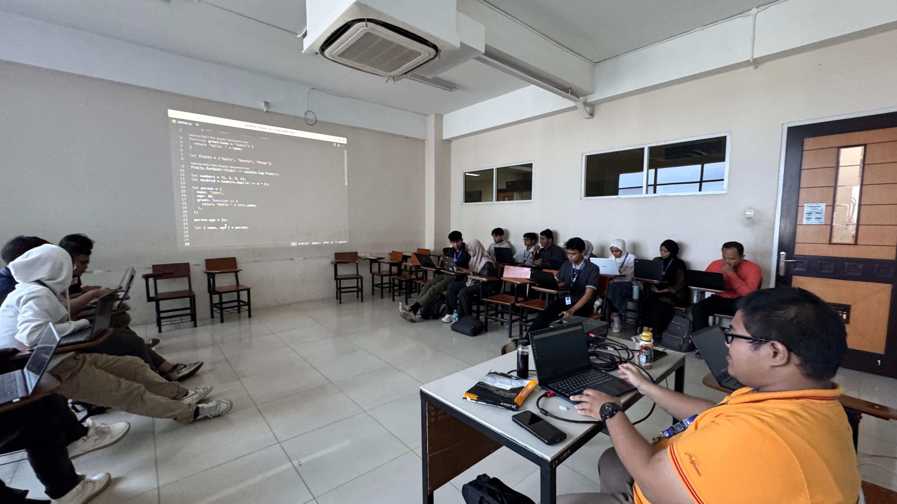
ISC Informatic Study Club adalah organisasi belajar di Universitas Pamulang yang mengumpulkan mahasiswa dengan minat di bidang teknologi. Melalui empat bidang utama, yaitu web development, data science, UI/UX design, dan English upskill, ISC menyediakan platform untuk mengasah keterampilan teknis serta soft skills. Organisasi ini menyelenggarakan workshop, seminar, dan pelatihan praktis yang menghubungkan teori dengan pengalaman industri. Dengan dukungan mentor profesional dan kerja sama antar anggota, ISC mendorong inovasi dan pengembangan diri. Anggota mendapatkan kesempatan mengeksplorasi solusi digital, meningkatkan kemampuan bahasa Inggris, serta mempersiapkan diri menghadapi tantangan global di era digital. Organisasi ini terus berkembang untuk menciptakan inovator masa depan unggul.
ISC Informatic Study Club adalah wadah pembelajaran dan pengembangan diri bagi mahasiswa di Universitas Pamulang yang berfokus pada empat bidang utama, yaitu:
web development adalah salah satu bidang di ISC yang berfokus membuat dan pemeliharaan web
Data Science berfokus pada eksplorasi, penelitian, dan penerapan teknologi berbasis data
UI/UX Desain berfokus pada tampilan antarmuka UI dan pengalaman pengguna UX
English Upskill berfokus buat asah kemampuan bahasa inggrismu
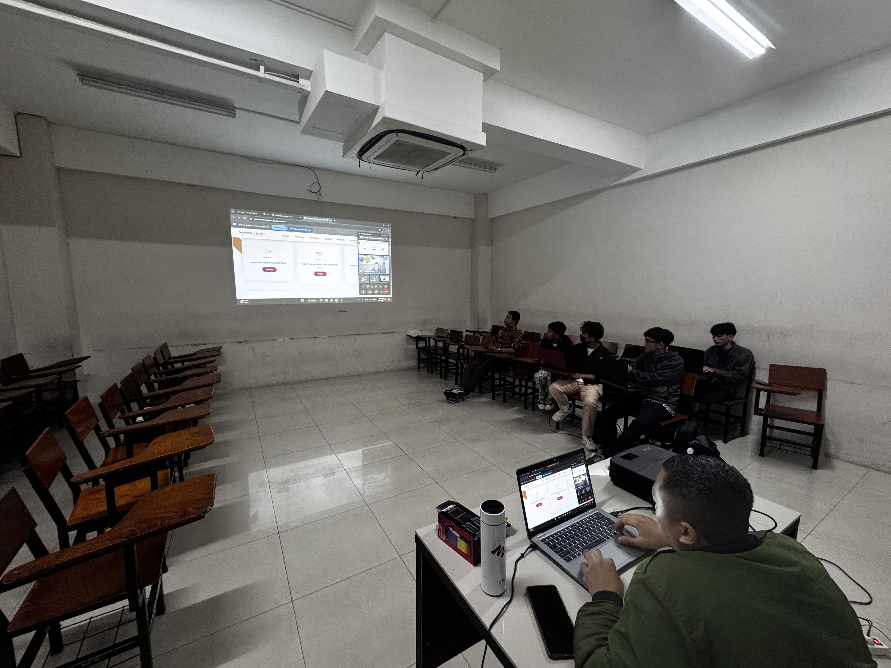
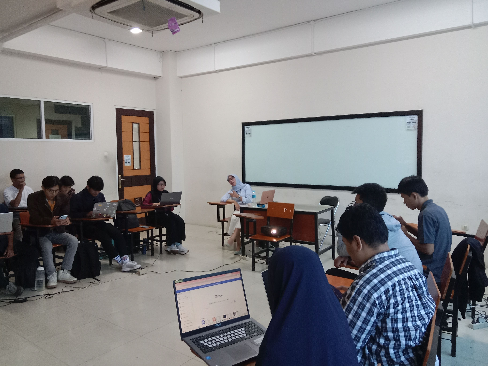
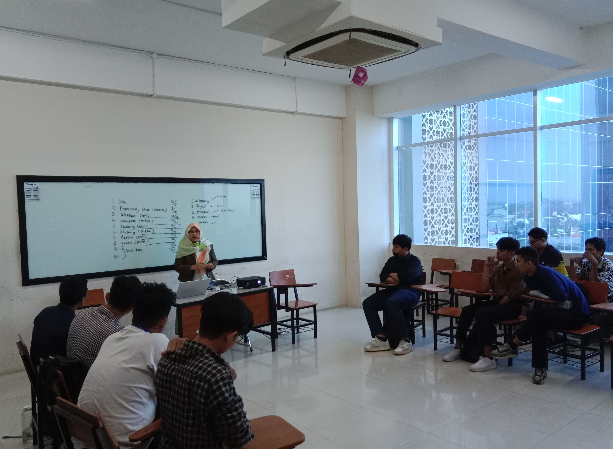
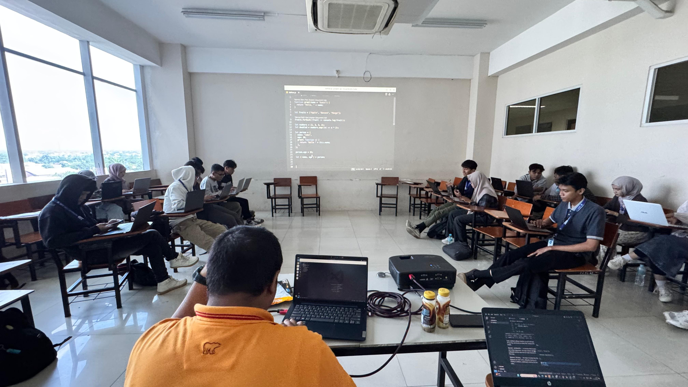
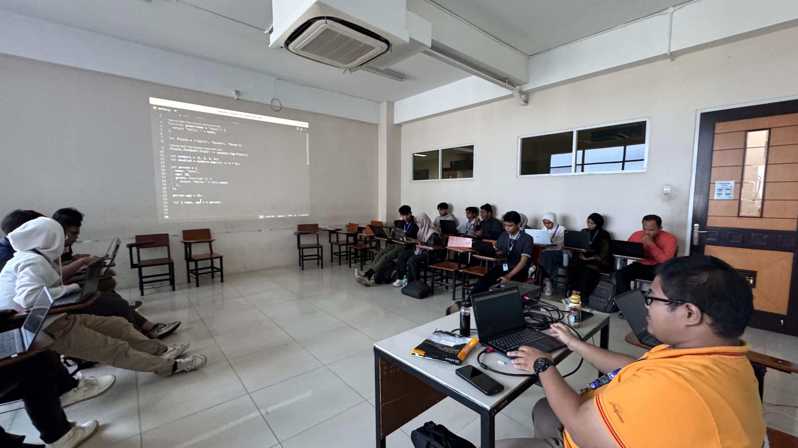